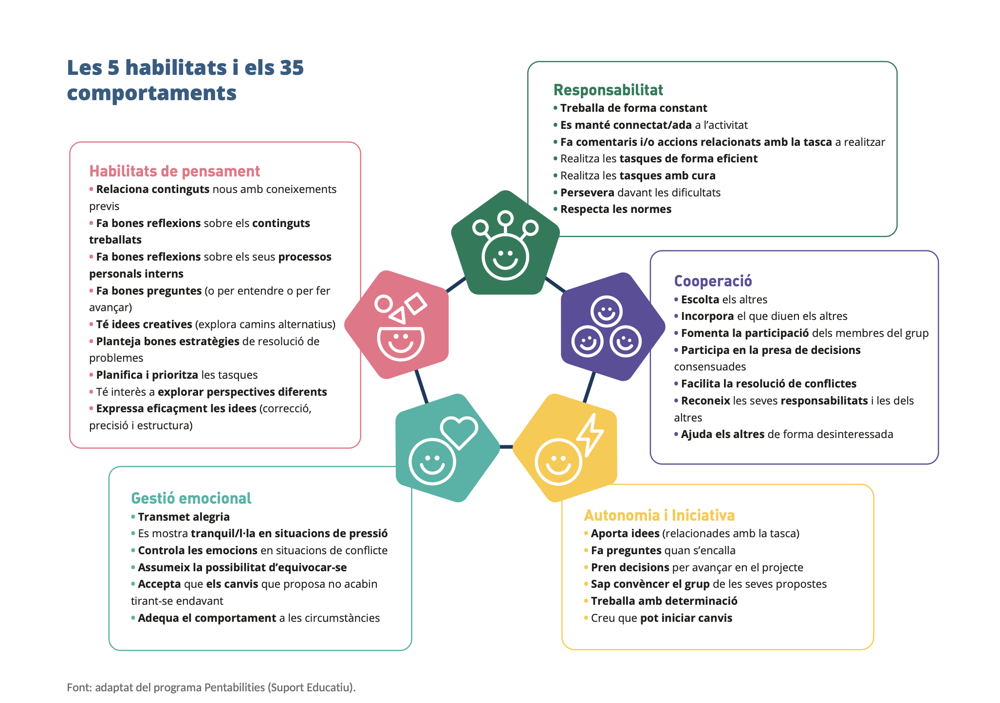
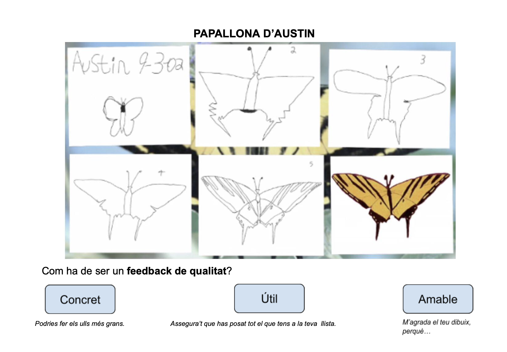

📒 Què és el «Diari del teu viatge»?
Al llarg d'aquest projecte trobaràs moments marcats amb aquest color verd. Cada cop que n'aparegui un, hauràs d'obrir el teu Diari del Viatge i respondre les preguntes que t'indiquem. Serà la teva captura del moment. 📸
🌊 Quin riu ets avui?
~30 minExplora les fotografies dels 10 rius. Fes clic al riu que millor descriu la teva energia o el teu moment vital actual. Quan facis clic, fixa't en el requadre blau «Connexió amb el teu riu» que apareix a baix: et donarà una pista sobre el que significa la teva tria.
1. Tria el teu riu
 🔍 Ampliar
🔍 Ampliar
1. Riu d'alta muntanya
Baixa ràpid, impetuós i transparent entre roques. Té molta força però encara busca el seu llit definitiu.
Tria una pregunta per respondre al diari:
- «Quan notes que t'has entusiasmat de sobte amb alguna cosa, la teva tendència és llançar-t'hi de cap o primer t'atures a pensar?»
- «Et passa que comences moltes coses però de vegades perds l'energia inicial? On creus que es perd aquell impuls?»
- «Si la teva energia fos un riu de muntanya, cap a on et portaria el seu corrent? Quin seria el teu "mar" ideal?»
 🔍 Ampliar
🔍 Ampliar
2. Riu de plana (meandres)
Avança sinuós, lent i segur per terreny pla. Fa grans corbes sense pressa, explorant cada pam de paisatge.
Tria una pregunta per respondre al diari:
- «Quan has de prendre una decisió important, ets dels que necessiten temps, observar i voltar-hi per tots costats?»
- «Hi ha situacions en les que anar lent et genera pressió o comparació amb els altres? Com ho gestiones?»
- «Els meandres sempre acaben trobant el camí cap al mar. Creus que la reflexió pausada és una fortalesa teva?»
 🔍 Ampliar
🔍 Ampliar
3. Riu amb gran cascada
Un desnivell sobtat que trenca la continuïtat. L'aigua cau amb estrèpit a un gorg profund abans de recomençar.
Tria una pregunta per respondre al diari:
- «Recordes algun moment de la teva vida on tot va canviar de cop, sense avisar? Com el vas viure al principi?»
- «Quan t'arriba un imprevist important, la teva primera reacció és paralitzar-te, desfogarte o buscar solucions?»
- «Les cascades sempre cauen a una bassa on el riu es reorganitza. Quin "gorg" has creat tu per sortir-te'n d'un moment difícil?»
 🔍 Ampliar
🔍 Ampliar
4. Riu trenat glacial
Es divideix en múltiples rierols que s'entrellacen sobre graves. No hi ha un curs únic, sinó molts camins alhora.
Tria una pregunta per respondre al diari:
- «Quines coses t'agraden tant que et costaria molt imaginar un futur sense cap d'elles? Llistar-les t'alleugereix o t'angoixa?»
- «Has viscut mai que tenir massa opcions t'ha paralitzat en comptes d'ajudar-te? Quan?»
- «Si haguessis de triar tres filons del riu que vols que segueixin corrent al teu futur, quins serien?»
 🔍 Ampliar
🔍 Ampliar
5. Gorg d'estiatge (bassa de calma)
Aigua aturada en una bassa fonda i fresca. Sembla que no es mogui, però acumula vida i espera la pluja.
Tria una pregunta per respondre al diari:
- «Quan et sents desbordat/da o buit/da, quina és la teva manera d'aturar-te i de recuperar forces?»
- «Hi ha alguna activitat, lloc o persona que et funcioni com a gorg personal? On et pares i respires?»
- «Creus que en la teva manera de prendre decisions et falta (o et sobra) temps de pausa i de reflexió?»
 🔍 Ampliar
🔍 Ampliar
6. Congost estret (canyó)
S'obre pas perforant parets verticals de roca. Tota la seva força és concentrada en un sol punt estret.
Tria una pregunta per respondre al diari:
- «Hi ha alguna cosa que vols aconseguir amb tanta convicció que sents que res et pot aturar del tot?»
- «Com reacciones davant els obstacles: els evites, els atacs frontalment o busques forats pels costats?»
- «Recorda un moment en el que vas superar quelcom que semblava impossible. Què et va fer no rendir-te?»
 🔍 Ampliar
🔍 Ampliar
7. Delta fluvial (desembocadura)
S'eixampla en una xarxa de canals fèrtils abans de fondre's harmònicament amb el mar immens.
Tria una pregunta per respondre al diari:
- «Hi ha alguna causa, problema o comunitat del món que et preocupi genuïnament i que vulguis que formi part del teu futur?»
- «Com et sents quan pots ajudar algú de debò? Creus que aquesta sensació podria ser un motor de vida per a tu?»
- «Si el teu futur professional pogués connectar amb alguna cosa "més gran que tu", de quina cosa es tractaria?»
 🔍 Ampliar
🔍 Ampliar
8. Riu subterrani (cenote)
Flueix sota terra en coves secretes. Ningú el veu des de la superfície, però porta un cabal pur i profund.
Tria una pregunta per respondre al diari:
- «Hi ha alguna afició, talent o interès que gairebé no has compartit mai amb ningú? Per què creus que el guardes?»
- «Alguna vegada has sorprès algú —o t'has sorprès a tu/a mateix/a— descobrint una capacitat que no sabies que tenies?»
- «Si poguessis dedicar el teu futur a quelcom que connecti amb el teu món interior, de quina cosa es tractaria?»
 🔍 Ampliar
🔍 Ampliar
9. Riu glaçat d'hivern
Protegit sota una capa de gel. Sembla aturat pel fred, però per sota l'aigua continua corrent esperant la primavera.
Tria una pregunta per respondre al diari:
- «Hi ha alguna cosa que vols però que sents que "encara no és el moment"? Com vius aquesta espera?»
- «Quina és la teva relació amb la incertesa: la toleres bé, t'angoixa o la converteixes en acció?»
- «Recorda una vegada que vas aguantar una etapa difícil fins que les coses es van desencallar. Què et va ajudar?»
 🔍 Ampliar
🔍 Ampliar
10. Aiguabarreig (confluència)
Dos corrents de colors diferents s'ajunten i caminen de costat fins a fondre's en un cabal el doble de potent.
Tria una pregunta per respondre al diari:
- «Hi ha persones al teu entorn sense les quals et semblaria molt difícil avançar? Qui i per què?»
- «Creus que les teves arrels —d'on véns, la teva família, la teva cultura— influencien qui vols ser? Com?»
- «Si el teu futur pogués ser una confluència de dos corrents, quins dos interessos, valors o persones voldries que s'hi trobessin?»
📒 Diari del teu viatge — Aturada 1: Inici del viatge
- Quina és la primera paraula o emoció que et ve al cap quan penses en prendre alguna decisió sobre què fer el curs vinent?
- Sobre el riu que has triat: explica per què l'has escollit, quina emoció et genera i respon UNA de les 3 preguntes que apareixen sota la imatge. Recorda que el requadre blau «Connexió amb el teu riu» que apareix en fer clic et dóna una pista sobre el que significa la teva tria!
→ Escriu les teves respostes al Diari del teu viatge.
🗺️ El diccionari simbòlic del riu
Com traduir la teva vida en geografiaCada element del riu té un significat simbòlic per parlar de la vida. Llegeix-los i fixa't si algun element del riu que has triat t'explica d'alguna manera.
⚓ El meu equipatge per navegar
Autoconeixement socioemocionalPer navegar per la vida cal conèixer el propi vaixell. A partir de les 5 habilitats socioemocionals, cada alumne escull la seva Àncora (una fortalesa que ja té) i el seu Timó (un comportament que vol entrenar durant aquest projecte).
Mira el mapa de les 5 habilitats i els 35 comportaments. Amb quins et sents més identificat/da?

⚓ La meva àncora (la fortalesa que ja tinc)
Un comportament en el qual et sents sòlid/a i segur/a.
🧭 El meu timó (el repte que vull entrenar)
Un comportament que et costa i que practicaràs conscientment.
📒 Diari del teu viatge — Aturada 2: El meu equipatge
- Quin comportament Àncora has triat i per què? Respon les 3 preguntes verdes que han aparegut en seleccionar-lo.
- Quin és el teu comportament Timó i per què et costa entrenar-lo? Respon les 3 preguntes blaves que han aparegut en seleccionar-lo.
→ Escriu les teves respostes al Diari del teu viatge.
🗺️ L'arquitectura del projecte: els 3 trams
Tres perspectives temporals d'autoconeixementAl llarg del projecte, cada estudiant dibuixarà una gran cartografia dividida en 3 trams temporals complementaris:
🌊 Tram 1: «El meu riu fins avui» (0 a 16 anys)
Fase individual i creativaInstruccions de creació pas a pas
- Pluja d'idees inicial: Escriu en brut: 3 moments feliços, 2 dificultats superades, 2 persones importants i 1 afició constant. Per exemple: «La competició d'atletisme de 5è, quan vam canviar de pis, quan vaig descobrir la música...»
- El curs del riu sobre suport físic: Dibuixa un riu sobre paper A3, cartolina o qualsevol suport creatiu. Fes que el riu s'eixampli en moments d'energia i s'estrenyi en moments de dubte o canvi.
- Enganxa fotografies, objectes i materials (tècnica lliure / collage): No et limitis només a dibuixar! Pots enganxar fotografies reals teves o del teu entorn, retallades de revistes, tiquets o entrades, petits objectes personals, adhesius i qualsevol element físic que representi moments clau de la teva vida.
- Afegeix la simbologia del diccionari: Dibuixa afluents amb noms de persones o aficions, roques amb etiquetes de dificultats superades i gorgs de pausa i reflexió. Per exemple: «Un afluent: la professora de català que em va animar a seguir llegint.»
- La llegenda personal: A una cantonada, explica els colors i símbols que has fet servir. Per exemple: «Aigua blava = alegria, Roca negra = dificultat superada, Afluent verd = persona que m'ha ajudat.»
📒 Diari del teu viatge — Aturada 3: El meu riu fins avui
- Mirant el teu riu dibuixat, quina pedra o dificultat que semblava enorme ara veus amb perspectiva que et va fer créixer?
- Hi ha algun element del diccionari simbòlic del riu (afluents, gorgs, cascades...) que representi especialment bé un moment de la teva vida? Quin i per què?
→ Escriu les teves respostes al Diari del teu viatge.
🦋 La papallona d'Austin: com donar feedback que faci créixer
La papallona d'Austin és la metàfora d'un projecte pedagògic real: Austin, un nen, va millorar el seu dibuix d'una papallona gràcies al feedback específic i constructiu dels seus companys de classe. El resultat final no s'assemblava gens al primer esbós. Intercanvia el teu riu amb una parella i doneu-vos retorn seguint els 3 principis:

💚 Amable
Destaca primer allò que funciona molt bé. Ex: «M'agrada molt com has representat el canvi d'institut amb aquell salt en el riu...»
🎯 Específic
Assenyala un punt exacte que no quedi clar. Ex: «Entre els 10 i els 12 anys no s'entén per què l'aigua és fosca»
💡 Útil
Proposa una acció clara de millora. Ex: «Si afegeixes una etiqueta al costat de la roca s'entendrà de seguida»
Recorda: el feedback no és una crítica. És un regal que ajuda a créixer.
📒 El teu diari del viatge
Les teves reflexions al llarg del projecteCom funciona el Diari del Viatge?
El Diari del Viatge és el teu espai de reflexió personal al llarg del projecte. No és un examen ni una feina amb nota — és una eina per capturar el que penses i sents en moments clau.
- Format: Pots fer-lo en un quadern físic, en fulles soltes o en el teu portafoli digital.
- Quan: Cada cop que trobis un bloc verd al web, para-t'hi i escriu les respostes abans de continuar.
- Com: Escriu en primera persona, sense censurar-te. No hi ha respostes correctes ni incorrectes.
- Consell: Afegeix imatges, dibuixos o paraules que trobes al teu voltant si t'ajuden a expressar-te millor.
Totes les entrades del teu diari
Inici del viatge · Quin riu ets avui?
- Quina és la primera paraula o emoció que et ve al cap quan penses en prendre alguna decisió sobre què fer el curs vinent?
- Sobre el riu que has triat: per què l'has escollit? Quina emoció et genera? Respon una de les 3 preguntes que apareixen sota la imatge.
📍 On trobaràs el moment de reflexió: al final de la galeria dels 10 rius, a la pestanya «La metàfora».
El meu equipatge · Àncora i Timó
- Respon les 3 preguntes verdes que han aparegut en triar el teu comportament Àncora.
- Respon les 3 preguntes blaves que han aparegut en triar el teu comportament Timó.
📍 On trobaràs el moment de reflexió: al final de la secció «El meu equipatge», a la pestanya «La metàfora».
El meu riu fins avui · Tram 1 (0 a 16 anys)
- Mirant el teu riu dibuixat, quina pedra o dificultat que semblava enorme ara veus amb perspectiva que et va fer créixer?
- Hi ha algun element del diccionari simbòlic del riu (afluents, gorgs, cascades...) que representi especialment bé un moment de la teva vida? Quin i per què?
- Quin feedback has rebut de la teva parella (Papallona d'Austin) i com has millorat el teu riu gràcies a ell?
📍 On trobaràs el moment de reflexió: al final de les instruccions del Tram 1, a la pestanya «Els 3 trams».